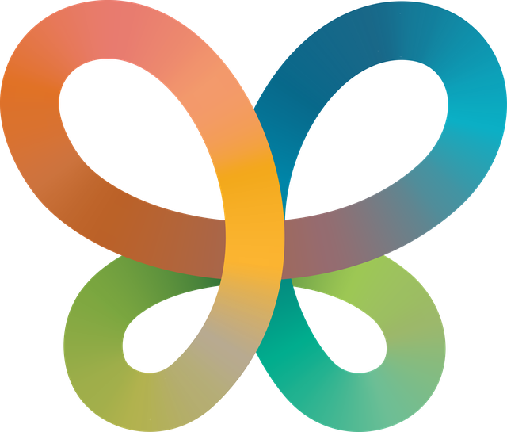

What it is
COP17 is the 17th UN Biodiversity Conference. Almost every country meets in Yerevan from 19 to 30 October 2026 to agree how to stop the loss of nature and bring it back. Armenia is the host.

UN Biodiversity Conference · CBD COP17
Yerevan, Armenia · 19–30 October 2026
I’m Narek Ohanyan. At COP17 I’m a member of the UNICEF Global Delegation and of the AUA Acopian Center delegation, and I run the Armenia Tree Project booth in the Blue Zone. This page shows where to find me each day, and how to book me.
In plain words
COP17 is the 17th UN Biodiversity Conference. Almost every country meets in Yerevan from 19 to 30 October 2026 to agree how to stop the loss of nature and bring it back. Armenia is the host.
UNICEF
I represent the UNICEF delegation at high-level events in the Blue Zone. My focus:
AUA
I’m part of the delegation of the American University of Armenia’s Acopian Center for the Environment, with engagements across the whole conference:
Armenia Tree Project
I co-host the permanent Armenia Tree Project (ATP) booth, Armenia’s forest and nature stand. I will:
Interactive calendar
Pick a day to see what I’m doing, where it is, who is running it and which zone it’s in. Use the filters to see just one zone.
Daily from the conference
Two places to keep up while the conference is on: quick news as it happens, and a calm recap at the end of each day.
Short updates from the conference as things happen.
One short story at the end of each day, in everyday language.
Watch
A short documentary about my path from an eco-club in Ararat to the global stage, made ahead of COP17. It’s the quickest way to know who I am.
Speaking & press
Tell me the date, the audience and the format. The form opens already filled in for COP17, so it takes a minute.